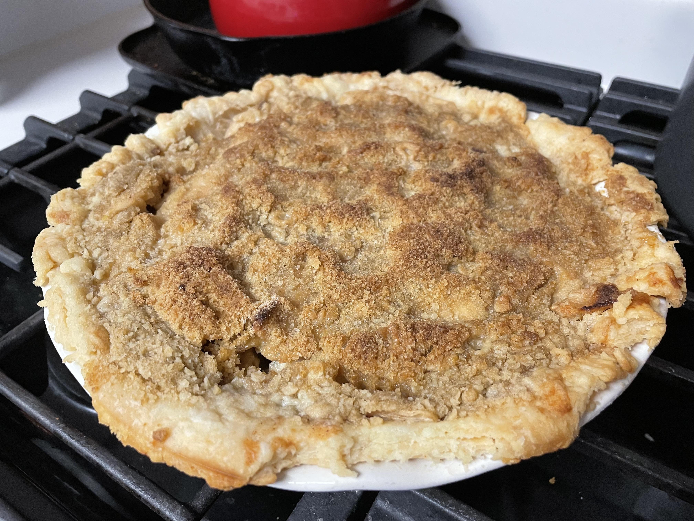

French Apple Pie Recipe
This apple pie has been a staple of Thanksgiving for as long as I can remember.
I think the original recipe originated from a Betty Crocker cookbook,
but has developed over the years

With a flakey crust and crumble top, the apple pie makes for a delicious rustic dessert
Build the crust
- 10 oz. flour
- 1 tsp. salt
- 6 oz. shortening
- 1 3/4 - 2 oz. ice cold water
Make the crust
- Add the flour, shortening, and salt to a large bowl
- Chop the shortening into small pieces
- With your hands, "sheet" the shortening between your hands to form flakes
- Add the ice water and mix until just combined
- Cut and fold the dough until it comes together and can be rolled to form the crust
Build the filling
- 3/4 cup sugar
- 1/4 cup flour
- 1/2 tsp. nutmeg
- 1/2 tsp. ground cinnamon
- 1 dash salt
- 6 cups Granny Smith apples
- a few drops of lemon juice
Make the filling
- Peel and core the Granny Smith apples
- Thinly slice the apples and toss into cold water with the lemon juice
- Mix all the dry ingredients
- Drain the apples and mix the dry ingredients with the apples
Build the topping and bake
- 1 cup flour
- 1/2 cup firm butter
- 1/2 cup brown sugar, packed
Finish the pie!
- Mix the topping with two forks until crumbly
- Add the apple mixture to the crust
- Sprinkle the topping over the apples
- Bake at 425ºF for 50 minutes, or until golden brown